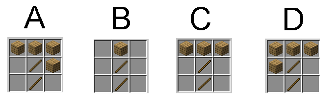
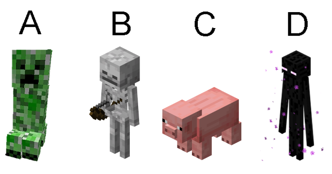
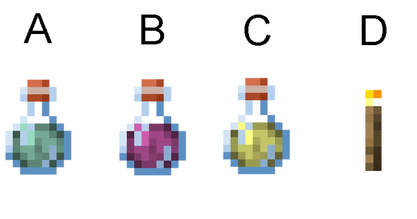
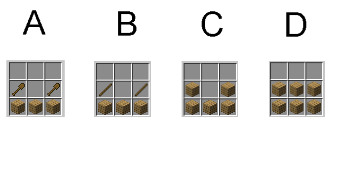

Quiz o Minecraft
Powrot
1. Kiedy powstala pierwsza pelna wersja Minecrafta?
A) listopad 2011r.
B) maj 2011r.
C) luty 2012r.
D) grudzien 2010r.
2. Ile jest wymiarow w Minecraft?
A) 4
B) 5
C) 2
D) 3
3. W ktorym wymiarze pokonujemy smoka?
A) Zwyk³y œwiat
B) End
C) Nether
D) Moder
4. Jaki crafting jest prawidlowy dla drewnianego kilofa?

A) 1
B) 2
C) 3
D) 4
5. Ktory to jest creeper?

A) 1
B) 2
C) 3
D) 4
6. Co regeneruje zdrowie?

A) 1
B) 2
C) 3
D) 4
7. W minecraftcie strzez sie:
A) szkielet
B) sniper
C) swinia
D) krowa
8. Na zbroje musisz uzbierac:
A) rubiny
B) szmaragdy
C) diamenty
D) korale
9. Ile potrzebujemy zyta do zrobienia chleba?
A) 2
B) 4
C) 5
D) 3
10. Jaki crafting jest prawidlowy dla lodki?

A) 1
B) 2
C) 3
D) 4